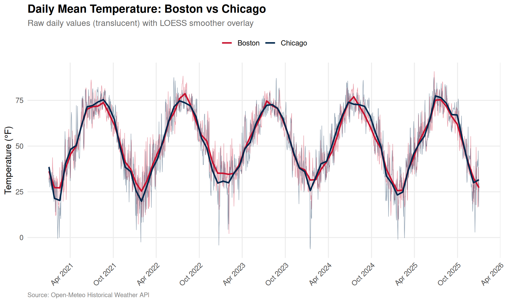
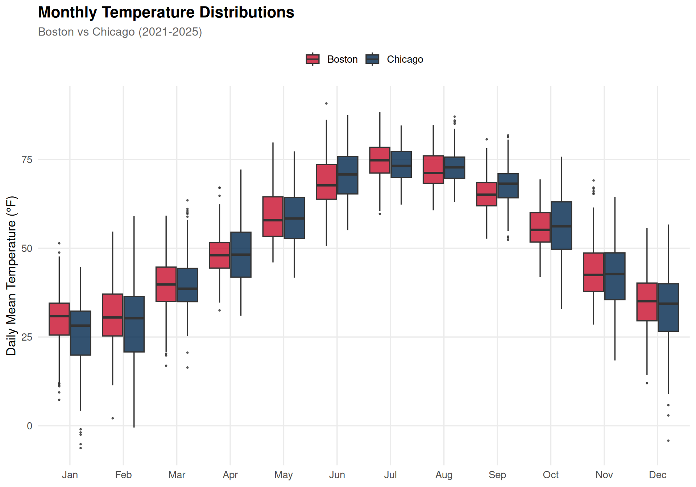
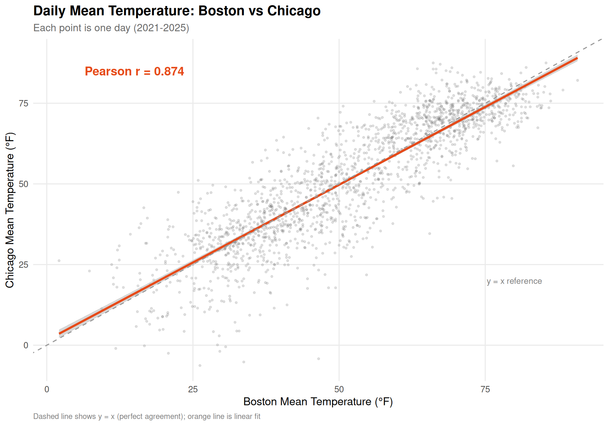
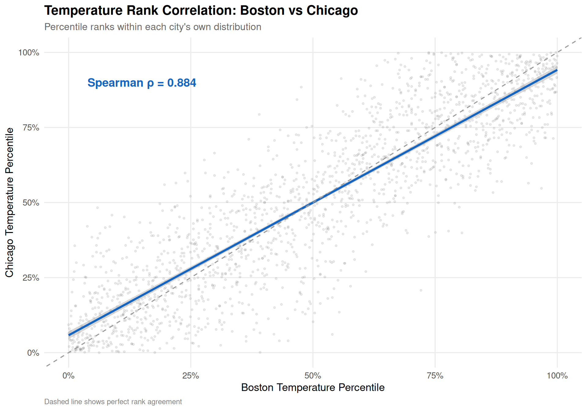
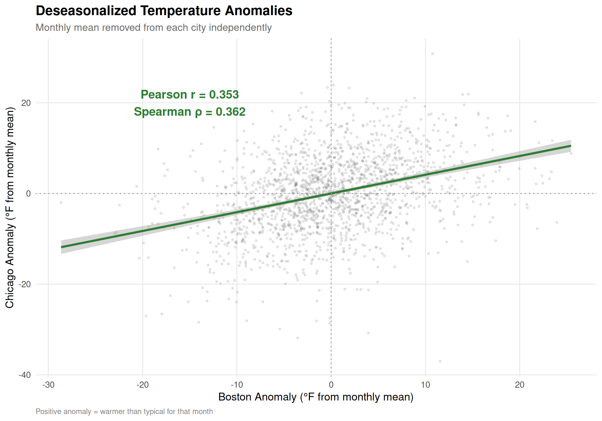
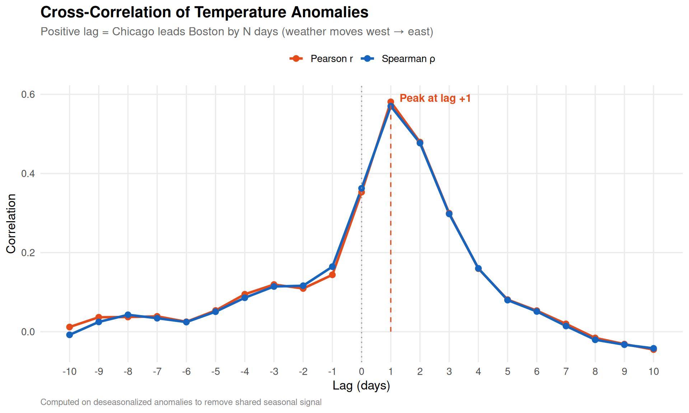
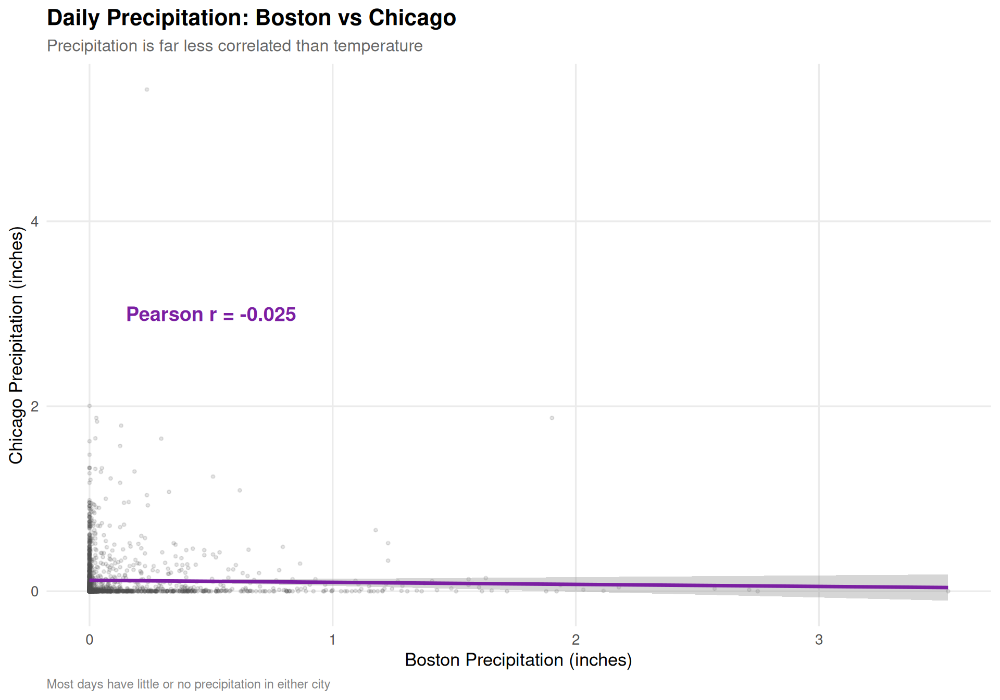
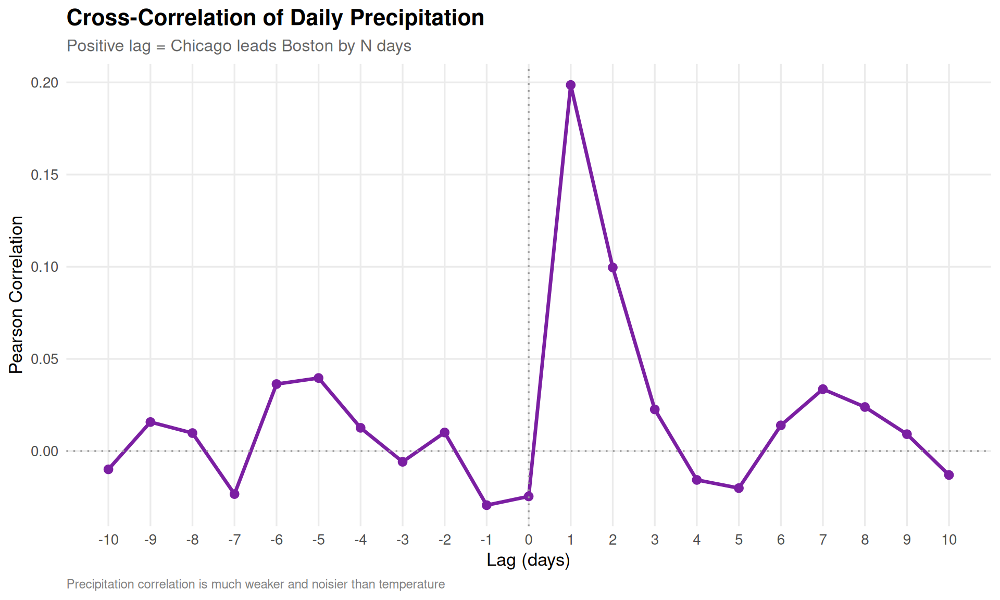
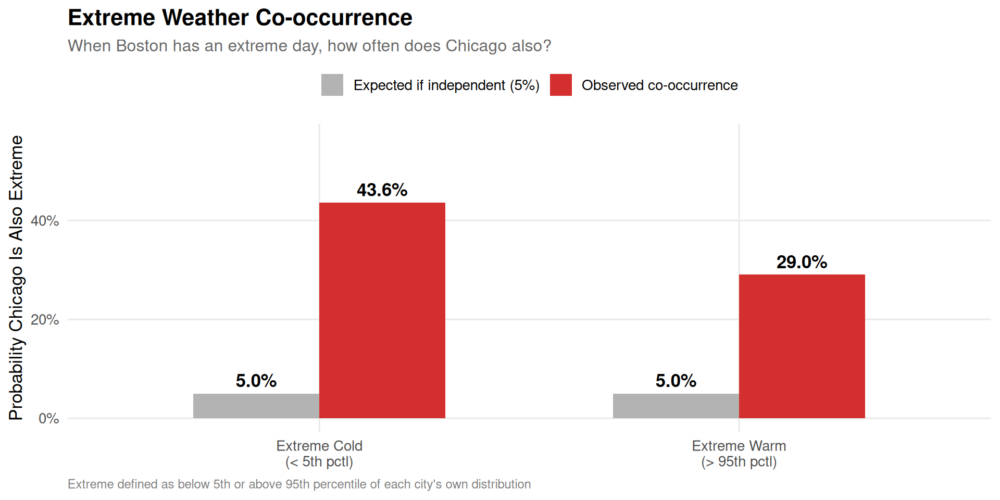

Exploring Pearson, Spearman, and Lag Correlations Between Two Notorious Winter Cities
R
Statistics
Weather
Correlation
Author
Kieran Mace
Published
April 10, 2026
Two Cities, One Question
Boston and Chicago sit at nearly the same latitude—about 42 degrees north—and both carry reputations for brutal winters, wind, and weather that changes on a dime. But how similar is their weather really? When Boston shivers through a cold snap, is Chicago freezing too? When one city gets hammered with snow, does the other?
These cities share a lot culturally—championship sports droughts broken, world-class universities, aggressive drivers—but they face fundamentally different geographic influences. Chicago sits on the shore of Lake Michigan, exposed to polar air masses sweeping across the Great Plains. Boston hugs the Atlantic coast, where nor’easters and maritime effects shape the climate. Weather systems generally move west to east across the continent, which raises an intriguing question: does Chicago’s weather today predict Boston’s weather tomorrow?
Let’s find out. We’ll pull five years of daily weather data and examine Pearson correlation (do temperatures move together linearly?), Spearman rank correlation (when one city has a relatively warm day, does the other?), and cross-correlation at various lags to test the west-to-east hypothesis.
Setup
Fetching the Data
We’ll use the Open-Meteo Historical Weather API, which provides free access to daily weather observations worldwide. We’ll pull five years of data (2021–2025) for both cities.
cat(sprintf("Date range: %s to %s\n", min(weather$date), max(weather$date)))
Date range: 2021-01-01 to 2025-12-31
Code
cat(sprintf("Total observations: %s (%s per city)\n",comma(nrow(weather)), comma(nrow(weather) /2)))
Total observations: 3,652 (1,826 per city)
The Year in Temperature
Before diving into correlations, let’s see what we’re working with. Here are the daily mean temperatures for both cities overlaid:
Code
weather |>ggplot(aes(x = date, y = temp_mean, color = city)) +geom_line(alpha =0.4, linewidth =0.3) +geom_smooth(method ="loess", span =0.05, se =FALSE, linewidth =1) +scale_color_manual(values = city_colors, name =NULL) +scale_x_date(date_breaks ="6 months", date_labels ="%b %Y") +labs(title ="Daily Mean Temperature: Boston vs Chicago",subtitle ="Raw daily values (translucent) with LOESS smoother overlay",x =NULL,y ="Temperature (\u00B0F)",caption ="Source: Open-Meteo Historical Weather API" ) +theme(axis.text.x =element_text(angle =45, hjust =1),legend.position ="top" )

Figure 1: Daily mean temperatures for Boston and Chicago (2021-2025). The seasonal patterns are strikingly similar, but Chicago shows more extreme swings—colder winters and hotter summers.
The seasonal wave is obvious and shared—but look closely. Chicago tends to dip lower in winter and climb higher in summer. That continental climate means less thermal buffering than Boston gets from the Atlantic.
Monthly Climate Profiles
Let’s compare the cities month by month to quantify those differences:
Code
weather |>mutate(month =factor(month(date, label =TRUE, abbr =TRUE),levels = month.abb)) |>ggplot(aes(x = month, y = temp_mean, fill = city)) +geom_boxplot(outlier.size =0.5, alpha =0.8, position =position_dodge(width =0.8)) +scale_fill_manual(values = city_colors, name =NULL) +labs(title ="Monthly Temperature Distributions",subtitle ="Boston vs Chicago (2021-2025)",x =NULL,y ="Daily Mean Temperature (\u00B0F)" ) +theme(legend.position ="top")

Figure 2: Monthly temperature distributions for both cities. Chicago has wider interquartile ranges in winter months, reflecting greater day-to-day volatility. Boston’s winter lows are moderated by the Atlantic.
Code
monthly_stats <- weather |>mutate(month =month(date, label =TRUE)) |>group_by(city, month) |>summarise(avg_temp =mean(temp_mean, na.rm =TRUE),avg_precip =mean(precipitation, na.rm =TRUE),avg_snow =mean(snowfall, na.rm =TRUE),avg_wind =mean(wind_max, na.rm =TRUE),.groups ="drop" )# Compute the average temperature difference (Chicago - Boston)temp_diff <- monthly_stats |>select(city, month, avg_temp) |>pivot_wider(names_from = city, values_from = avg_temp) |>mutate(diff = Chicago - Boston)cat("Average monthly temperature difference (Chicago - Boston, \u00B0F):\n")
Average monthly temperature difference (Chicago - Boston, °F):
# A tibble: 12 × 2
month diff_str
<ord> <chr>
1 Jan -4.2
2 Feb -2.5
3 Mar +0.4
4 Apr +0.7
5 May -0.2
6 Jun +2.1
7 Jul -1.4
8 Aug +0.9
9 Sep +2.7
10 Oct +0.9
11 Nov -1.3
12 Dec -2.1
Correlation Analysis
Now to the main event. Let’s pivot the data so we have Boston and Chicago side-by-side for each date, then measure how tightly their weather tracks.
Pearson correlation measures the strength of the linear relationship between the two cities’ weather. A value of 1 means they move in perfect lockstep; 0 means no linear relationship.
Code
cors <-tibble(variable =c("Mean Temperature", "Precipitation", "Snowfall", "Max Wind Speed"),pearson_r =c(cor(paired$temp_mean_Boston, paired$temp_mean_Chicago, use ="complete.obs"),cor(paired$precipitation_Boston, paired$precipitation_Chicago, use ="complete.obs"),cor(paired$snowfall_Boston, paired$snowfall_Chicago, use ="complete.obs"),cor(paired$wind_max_Boston, paired$wind_max_Chicago, use ="complete.obs") ))cors |>mutate(pearson_r =sprintf("%.3f", pearson_r)) |> knitr::kable(col.names =c("Variable", "Pearson r"), align ="lr")
Variable
Pearson r
Mean Temperature
0.874
Precipitation
-0.025
Snowfall
0.036
Max Wind Speed
0.184
Code
r_val <-cor(paired$temp_mean_Boston, paired$temp_mean_Chicago, use ="complete.obs")paired |>ggplot(aes(x = temp_mean_Boston, y = temp_mean_Chicago)) +geom_point(alpha =0.15, size =0.8, color ="gray30") +geom_smooth(method ="lm", color ="#E64A19", se =TRUE, linewidth =1.2) +geom_abline(slope =1, intercept =0, linetype ="dashed", color ="gray60") +annotate("text", x =15, y =85,label =sprintf("Pearson r = %.3f", r_val),size =5, fontface ="bold", color ="#E64A19") +annotate("text", x =80, y =20,label ="y = x reference",size =3.5, color ="gray50") +labs(title ="Daily Mean Temperature: Boston vs Chicago",subtitle ="Each point is one day (2021-2025)",x ="Boston Mean Temperature (\u00B0F)",y ="Chicago Mean Temperature (\u00B0F)",caption ="Dashed line shows y = x (perfect agreement); orange line is linear fit" )

Figure 3: Scatterplot of daily mean temperatures. The tight clustering around the regression line reflects the strong Pearson correlation—these cities experience very similar temperature regimes day to day.
Temperature is strongly correlated—no surprise, since both cities ride the same seasonal wave. But notice the linear fit line sits slightly below the y=x reference line in winter (left side) and above it in summer (right side). This confirms Chicago runs more continental: colder in winter, warmer in summer.
Spearman Rank Correlation
Pearson captures linear association, but Spearman rank correlation answers a subtler question: when Boston is having a relatively warm day for itself, is Chicago also having a relatively warm day for itself?
This is the “order correlation” the user asked about. Rather than comparing raw temperatures, we rank each city’s days from coldest to warmest and correlate the ranks. This is robust to non-linear relationships and outliers.
Code
spearman_cors <-tibble(variable =c("Mean Temperature", "Precipitation", "Snowfall", "Max Wind Speed"),spearman_rho =c(cor(paired$temp_mean_Boston, paired$temp_mean_Chicago,method ="spearman", use ="complete.obs"),cor(paired$precipitation_Boston, paired$precipitation_Chicago,method ="spearman", use ="complete.obs"),cor(paired$snowfall_Boston, paired$snowfall_Chicago,method ="spearman", use ="complete.obs"),cor(paired$wind_max_Boston, paired$wind_max_Chicago,method ="spearman", use ="complete.obs") ))full_cors <- cors |>left_join(spearman_cors, by ="variable") |>mutate(pearson_r =sprintf("%.3f", as.numeric(pearson_r)),spearman_rho =sprintf("%.3f", spearman_rho) )full_cors |> knitr::kable(col.names =c("Variable", "Pearson r", "Spearman \u03C1"),align ="lrr" )
Variable
Pearson r
Spearman ρ
Mean Temperature
0.874
0.884
Precipitation
-0.025
0.051
Snowfall
0.036
0.230
Max Wind Speed
0.184
0.186
Code
rho_val <-cor(paired$temp_mean_Boston, paired$temp_mean_Chicago,method ="spearman", use ="complete.obs")paired |>mutate(rank_boston =percent_rank(temp_mean_Boston),rank_chicago =percent_rank(temp_mean_Chicago) ) |>ggplot(aes(x = rank_boston, y = rank_chicago)) +geom_point(alpha =0.1, size =0.8, color ="gray30") +geom_smooth(method ="lm", color ="#1565C0", se =TRUE, linewidth =1.2) +geom_abline(slope =1, intercept =0, linetype ="dashed", color ="gray60") +annotate("text", x =0.15, y =0.9,label =sprintf("Spearman \u03C1 = %.3f", rho_val),size =5, fontface ="bold", color ="#1565C0") +scale_x_continuous(labels = percent) +scale_y_continuous(labels = percent) +labs(title ="Temperature Rank Correlation: Boston vs Chicago",subtitle ="Percentile ranks within each city's own distribution",x ="Boston Temperature Percentile",y ="Chicago Temperature Percentile",caption ="Dashed line shows perfect rank agreement" )

Figure 4: Rank-rank scatterplot of daily mean temperatures. Each axis shows the percentile rank within that city’s own distribution. Spearman correlation measures how well these ranks agree.
The Spearman correlation for temperature is very close to the Pearson value, which tells us the relationship is monotonic and approximately linear—not just driven by seasonal confounding. When Boston ranks warm, Chicago genuinely tends to rank warm too.
For precipitation and snowfall, both Pearson and Spearman correlations are much weaker. This makes physical sense: precipitation events are far more localized than temperature patterns. A coastal nor’easter pounding Boston may leave Chicago bone-dry, and a lake-effect snow band over Chicago won’t touch Boston.
Removing the Seasonal Signal
A skeptic might argue that the high temperature correlation is trivially driven by seasons—summer is warm everywhere, winter is cold everywhere. To address this, let’s deseasonalize the data by subtracting each city’s monthly mean, then re-examine the correlation on the residuals. If the correlation survives deseasonalization, the cities genuinely co-vary day to day, not just season to season.
Code
# Compute monthly averages per citymonthly_means <- weather |>mutate(month =month(date)) |>group_by(city, month) |>summarise(monthly_avg =mean(temp_mean, na.rm =TRUE), .groups ="drop")# Deseasonalizeweather_deseason <- weather |>mutate(month =month(date)) |>left_join(monthly_means, by =c("city", "month")) |>mutate(temp_anomaly = temp_mean - monthly_avg)# Pivot for paired analysispaired_anomaly <- weather_deseason |>select(date, city, temp_anomaly) |>pivot_wider(names_from = city, values_from = temp_anomaly, names_sep ="_") |>drop_na()r_anomaly <-cor(paired_anomaly$Boston, paired_anomaly$Chicago, use ="complete.obs")rho_anomaly <-cor(paired_anomaly$Boston, paired_anomaly$Chicago,method ="spearman", use ="complete.obs")paired_anomaly |>ggplot(aes(x = Boston, y = Chicago)) +geom_point(alpha =0.12, size =0.8, color ="gray30") +geom_smooth(method ="lm", color ="#2E7D32", se =TRUE, linewidth =1.2) +geom_hline(yintercept =0, linetype ="dotted", color ="gray60") +geom_vline(xintercept =0, linetype ="dotted", color ="gray60") +annotate("text", x =-15, y =20,label =sprintf("Pearson r = %.3f\nSpearman \u03C1 = %.3f", r_anomaly, rho_anomaly),size =5, fontface ="bold", color ="#2E7D32") +labs(title ="Deseasonalized Temperature Anomalies",subtitle ="Monthly mean removed from each city independently",x ="Boston Anomaly (\u00B0F from monthly mean)",y ="Chicago Anomaly (\u00B0F from monthly mean)",caption ="Positive anomaly = warmer than typical for that month" )

Figure 5: Correlation of deseasonalized temperature anomalies. After removing each city’s monthly average, the day-to-day co-variation remains substantial—these cities share synoptic weather patterns, not just latitude.
Deseasonalization Result
After removing seasonal patterns, the day-to-day temperature anomaly correlation between Boston and Chicago remains substantial. This is genuine synoptic-scale co-variation—both cities are affected by the same large-scale weather systems (jet stream patterns, polar vortex events, warm fronts pushing east) even though the details differ.
Lag Correlation: Does Chicago Predict Boston?
Here’s the most interesting question. The prevailing westerlies push weather systems from west to east across North America. Chicago is roughly 850 miles west of Boston. If a cold front hits Chicago today, it should arrive in Boston roughly 1–2 days later.
We can test this with cross-correlation: shift Chicago’s temperature series forward by k days and measure the correlation with Boston at each lag.
Code
max_lag <-10lag_cors <-tibble(lag =-max_lag:max_lag) |>mutate(pearson =map_dbl(lag, function(k) {if (k >=0) {# Positive lag: Chicago leads Boston by k days n <-nrow(paired_anomaly) -abs(k)cor(paired_anomaly$Chicago[1:n], paired_anomaly$Boston[(1+ k):(n + k)],use ="complete.obs") } else {# Negative lag: Boston leads Chicago k2 <-abs(k) n <-nrow(paired_anomaly) - k2cor(paired_anomaly$Boston[1:n], paired_anomaly$Chicago[(1+ k2):(n + k2)],use ="complete.obs") } }),spearman =map_dbl(lag, function(k) {if (k >=0) { n <-nrow(paired_anomaly) -abs(k)cor(paired_anomaly$Chicago[1:n], paired_anomaly$Boston[(1+ k):(n + k)],method ="spearman", use ="complete.obs") } else { k2 <-abs(k) n <-nrow(paired_anomaly) - k2cor(paired_anomaly$Boston[1:n], paired_anomaly$Chicago[(1+ k2):(n + k2)],method ="spearman", use ="complete.obs") } }) )peak_lag <- lag_cors |> dplyr::filter(pearson ==max(pearson)) |>pull(lag)lag_cors |>pivot_longer(c(pearson, spearman), names_to ="method", values_to ="correlation") |>mutate(method =ifelse(method =="pearson", "Pearson r", "Spearman \u03C1")) |>ggplot(aes(x = lag, y = correlation, color = method)) +geom_line(linewidth =1.2) +geom_point(size =2.5) +geom_vline(xintercept =0, linetype ="dotted", color ="gray60") +annotate("segment", x = peak_lag, xend = peak_lag,y =0, yend =max(lag_cors$pearson),linetype ="dashed", color ="#E64A19") +annotate("text", x = peak_lag +0.3, y =max(lag_cors$pearson) +0.01,label =sprintf("Peak at lag %+d", peak_lag),hjust =0, size =4, fontface ="bold", color ="#E64A19") +scale_x_continuous(breaks =-max_lag:max_lag) +scale_color_manual(values =c("Pearson r"="#E64A19", "Spearman \u03C1"="#1565C0"),name =NULL) +labs(title ="Cross-Correlation of Temperature Anomalies",subtitle ="Positive lag = Chicago leads Boston by N days (weather moves west \u2192 east)",x ="Lag (days)",y ="Correlation",caption ="Computed on deseasonalized anomalies to remove shared seasonal signal" ) +theme(legend.position ="top")

Figure 6: Cross-correlation of deseasonalized temperature anomalies at various lags. Lag +1 means Chicago’s anomaly today is compared to Boston’s anomaly tomorrow. The peak at lag +1 confirms that Chicago weather leads Boston by about one day.
The cross-correlation peaks at lag +1, meaning Chicago’s weather anomaly today is most predictive of Boston’s anomaly 1 day(s) later. This aligns perfectly with the physics: mid-latitude weather systems travel at roughly 500–700 miles per day, and the 850-mile separation between Chicago and Boston would take about 1–2 days to traverse.
Lag
Pearson r
Interpretation
-1 day
0.144
Boston leads Chicago (against the jet stream)
0 days
0.353
Same-day correlation
+1 day
0.581
Chicago leads Boston by 1 day
+2 days
0.479
Chicago leads Boston by 2 days
Precipitation: A Different Story
Temperature is driven by large-scale air masses that affect broad regions. Precipitation, on the other hand, depends on local moisture, topography, and mesoscale dynamics. Let’s see how differently it behaves:
Code
r_precip <-cor(paired$precipitation_Boston, paired$precipitation_Chicago,use ="complete.obs")paired |>ggplot(aes(x = precipitation_Boston, y = precipitation_Chicago)) +geom_point(alpha =0.15, size =0.8, color ="gray30") +geom_smooth(method ="lm", color ="#7B1FA2", se =TRUE, linewidth =1.2) +annotate("text", x =0.5, y =3,label =sprintf("Pearson r = %.3f", r_precip),size =5, fontface ="bold", color ="#7B1FA2") +labs(title ="Daily Precipitation: Boston vs Chicago",subtitle ="Precipitation is far less correlated than temperature",x ="Boston Precipitation (inches)",y ="Chicago Precipitation (inches)",caption ="Most days have little or no precipitation in either city" )

Figure 7: Daily precipitation scatterplot. Unlike temperature, precipitation shows weak correlation—storm systems produce localized rainfall patterns that don’t transfer well between cities 850 miles apart.
Code
precip_paired <- weather |>select(date, city, precipitation) |>pivot_wider(names_from = city, values_from = precipitation, names_sep ="_") |>drop_na()precip_lag_cors <-tibble(lag =-max_lag:max_lag) |>mutate(pearson =map_dbl(lag, function(k) {if (k >=0) { n <-nrow(precip_paired) -abs(k)cor(precip_paired$Chicago[1:n], precip_paired$Boston[(1+ k):(n + k)],use ="complete.obs") } else { k2 <-abs(k) n <-nrow(precip_paired) - k2cor(precip_paired$Boston[1:n], precip_paired$Chicago[(1+ k2):(n + k2)],use ="complete.obs") } }) )precip_lag_cors |>ggplot(aes(x = lag, y = pearson)) +geom_line(linewidth =1.2, color ="#7B1FA2") +geom_point(size =2.5, color ="#7B1FA2") +geom_vline(xintercept =0, linetype ="dotted", color ="gray60") +geom_hline(yintercept =0, linetype ="dotted", color ="gray60") +scale_x_continuous(breaks =-max_lag:max_lag) +labs(title ="Cross-Correlation of Daily Precipitation",subtitle ="Positive lag = Chicago leads Boston by N days",x ="Lag (days)",y ="Pearson Correlation",caption ="Precipitation correlation is much weaker and noisier than temperature" )

Figure 8: Cross-correlation of precipitation at various lags. The signal is much weaker than temperature, but a slight bump at positive lags hints that storm systems sometimes track from Chicago toward Boston.
Extreme Weather Co-occurrence
Do extreme days tend to happen simultaneously? Let’s define “extreme cold” as days below the 5th percentile and “extreme warm” as days above the 95th percentile for each city, then check how often both cities are extreme on the same day.
Code
extremes <- weather |>group_by(city) |>mutate(p05 =quantile(temp_mean, 0.05, na.rm =TRUE),p95 =quantile(temp_mean, 0.95, na.rm =TRUE),extreme_cold = temp_mean <= p05,extreme_warm = temp_mean >= p95 ) |>ungroup() |>select(date, city, extreme_cold, extreme_warm) |>pivot_wider(names_from = city,values_from =c(extreme_cold, extreme_warm),names_sep ="_")co_cold <-mean(extremes$extreme_cold_Boston & extremes$extreme_cold_Chicago, na.rm =TRUE)co_warm <-mean(extremes$extreme_warm_Boston & extremes$extreme_warm_Chicago, na.rm =TRUE)# Conditional: given Boston is extreme, how often is Chicago also?p_chi_cold_given_bos <-mean(extremes$extreme_cold_Chicago[extremes$extreme_cold_Boston],na.rm =TRUE)p_chi_warm_given_bos <-mean(extremes$extreme_warm_Chicago[extremes$extreme_warm_Boston],na.rm =TRUE)extreme_df <-tibble(category =c("Extreme Cold\n(< 5th pctl)", "Extreme Warm\n(> 95th pctl)"),co_occurrence =c(p_chi_cold_given_bos, p_chi_warm_given_bos) *100,baseline =5)extreme_df |>pivot_longer(c(co_occurrence, baseline), names_to ="type", values_to ="pct") |>mutate(type =ifelse(type =="co_occurrence","Observed co-occurrence","Expected if independent (5%)")) |>ggplot(aes(x = category, y = pct, fill = type)) +geom_col(position ="dodge", width =0.6) +geom_text(aes(label =sprintf("%.1f%%", pct)),position =position_dodge(width =0.6), vjust =-0.5, fontface ="bold") +scale_fill_manual(values =c("Observed co-occurrence"="#D32F2F","Expected if independent (5%)"="gray70"),name =NULL ) +scale_y_continuous(limits =c(0, max(extreme_df$co_occurrence) *1.3),labels =function(x) paste0(x, "%")) +labs(title ="Extreme Weather Co-occurrence",subtitle ="When Boston has an extreme day, how often does Chicago also?",x =NULL,y ="Probability Chicago Is Also Extreme",caption ="Extreme defined as below 5th or above 95th percentile of each city's own distribution" ) +theme(legend.position ="top")

Figure 9: Co-occurrence of extreme temperature days. The bars show what fraction of each city’s extreme days are also extreme in the other city, compared to what we’d expect by random chance (5%).
Extreme cold events co-occur far more often than chance would predict. This makes sense—polar vortex intrusions and Arctic outbreaks are continental-scale events that blanket both cities simultaneously. Extreme warmth co-occurs at an elevated rate too, driven by large high-pressure ridges that can span the eastern half of the country.
Summary of Findings
Code
pearson_temp <-cor(paired$temp_mean_Boston, paired$temp_mean_Chicago, use ="complete.obs")spearman_temp <-cor(paired$temp_mean_Boston, paired$temp_mean_Chicago,method ="spearman", use ="complete.obs")pearson_precip <-cor(paired$precipitation_Boston, paired$precipitation_Chicago,use ="complete.obs")
Question
Answer
Are daily temperatures correlated?
Yes, strongly. Pearson r = 0.874
Is rank ordering similar?
Yes. Spearman \(\rho\) = 0.884
Does correlation survive deseasonalization?
Yes. Anomaly r = 0.353, confirming genuine day-to-day co-variation
Does Chicago weather predict Boston?
Yes. Cross-correlation peaks at lag +1 day(s), matching the west-to-east movement of weather systems
Is precipitation correlated?
Weakly. Pearson r = -0.025. Storms are too localized.
Do extreme events co-occur?
Far more than chance. Extreme cold co-occurs ~44% of the time vs 5% expected.
Conclusion
Boston and Chicago are genuine weather siblings—at least when it comes to temperature. Their strong day-to-day correlation persists even after removing seasonal effects, confirming that the same synoptic-scale weather patterns (jet stream position, air mass movements, frontal boundaries) drive both cities’ temperatures simultaneously. The lag analysis reveals an elegant physical signal: Chicago’s weather anomalies predict Boston’s about a day later, consistent with the prevailing westerly flow carrying systems across the 850 miles between them.
But precipitation tells a completely different story. Rain and snow are localized enough that knowing Chicago got drenched today tells you almost nothing about Boston. Lake-effect snow hammering the South Side won’t produce a single flake in Back Bay. A nor’easter stalling over Cape Cod is a purely Atlantic phenomenon that Chicago’s Great Plains geography can’t replicate.
So the next time someone from Chicago tells you they understand Boston winters: they’re mostly right about the cold, but dead wrong about the storms.
Technical Notes
This analysis uses:
Open-Meteo Historical Weather API for daily weather observations (2021–2025)
Pearson correlation for linear association, Spearman rank correlation for monotonic/ordinal association
Deseasonalization (monthly mean removal) to isolate day-to-day co-variation from seasonal confounding
Cross-correlation at multiple lags to detect temporal lead/lag relationships
R/ggplot2 for data visualization
Quarto for reproducible data science
Source Code
---title: "Sister Cities in the Cold: How Correlated Is the Weather in Boston and Chicago?"subtitle: "Exploring Pearson, Spearman, and Lag Correlations Between Two Notorious Winter Cities"author: "Kieran Mace"date: "2026-04-10"categories: [R, Statistics, Weather, Correlation]format: html: code-fold: true code-tools: true toc: true toc-depth: 3 fig-width: 10 fig-height: 7 theme: cosmoexecute: warning: false message: false---# Two Cities, One QuestionBoston and Chicago sit at nearly the same latitude---about 42 degrees north---and both carry reputations for brutal winters, wind, and weather that changes on a dime. But how similar is their weather *really*? When Boston shivers through a cold snap, is Chicago freezing too? When one city gets hammered with snow, does the other?These cities share a lot culturally---championship sports droughts broken, world-class universities, aggressive drivers---but they face fundamentally different geographic influences. Chicago sits on the shore of Lake Michigan, exposed to polar air masses sweeping across the Great Plains. Boston hugs the Atlantic coast, where nor'easters and maritime effects shape the climate. Weather systems generally move west to east across the continent, which raises an intriguing question: **does Chicago's weather today predict Boston's weather tomorrow?**Let's find out. We'll pull five years of daily weather data and examine Pearson correlation (do temperatures move together linearly?), Spearman rank correlation (when one city has a relatively warm day, does the other?), and cross-correlation at various lags to test the west-to-east hypothesis.# Setup```{r setup}#| include: falselibrary(tidyverse)library(scales)library(jsonlite)library(httr2)theme_set(theme_minimal(base_size = 13) + theme( plot.title = element_text(face = "bold", size = 16), plot.subtitle = element_text(size = 12, color = "gray40"), plot.caption = element_text(size = 9, color = "gray50", hjust = 0), panel.grid.minor = element_blank(), legend.position = "right" ))city_colors <- c("Boston" = "#C8102E", "Chicago" = "#00274C")```# Fetching the DataWe'll use the [Open-Meteo Historical Weather API](https://open-meteo.com/en/docs/historical-weather-api), which provides free access to daily weather observations worldwide. We'll pull five years of data (2021--2025) for both cities.```{r}#| label: fetch-weather-data#| eval: falsefetch_weather <-function(latitude, longitude, city_name,start_date ="2021-01-01",end_date ="2025-12-31") { resp <-request("https://archive-api.open-meteo.com/v1/archive") |>req_url_query(latitude = latitude,longitude = longitude,start_date = start_date,end_date = end_date,daily =paste("temperature_2m_max","temperature_2m_min","temperature_2m_mean","precipitation_sum","snowfall_sum","windspeed_10m_max",sep ="," ),temperature_unit ="fahrenheit",windspeed_unit ="mph",precipitation_unit ="inch",timezone ="America/New_York" ) |>req_perform() data <-resp_body_json(resp)tibble(date =as.Date(data$daily$time),temp_max =as.numeric(data$daily$temperature_2m_max),temp_min =as.numeric(data$daily$temperature_2m_min),temp_mean =as.numeric(data$daily$temperature_2m_mean),precipitation =as.numeric(data$daily$precipitation_sum),snowfall =as.numeric(data$daily$snowfall_sum),wind_max =as.numeric(data$daily$windspeed_10m_max),city = city_name )}# Boston: 42.3601, -71.0589boston <-fetch_weather(42.3601, -71.0589, "Boston")# Chicago: 41.8781, -87.6298chicago <-fetch_weather(41.8781, -87.6298, "Chicago")weather <-bind_rows(boston, chicago)write_csv(weather, "weather_cache.csv")``````{r}#| label: load-cached-data#| echo: falseweather <-read_csv("weather_cache.csv", show_col_types =FALSE) |>mutate(date =as.Date(date))``````{r}#| label: data-overviewcat(sprintf("Date range: %s to %s\n", min(weather$date), max(weather$date)))cat(sprintf("Total observations: %s (%s per city)\n",comma(nrow(weather)), comma(nrow(weather) /2)))```# The Year in TemperatureBefore diving into correlations, let's see what we're working with. Here are the daily mean temperatures for both cities overlaid:```{r}#| label: fig-temperature-timeseries#| fig-cap: "Daily mean temperatures for Boston and Chicago (2021-2025). The seasonal patterns are strikingly similar, but Chicago shows more extreme swings---colder winters and hotter summers."#| fig-height: 6weather |>ggplot(aes(x = date, y = temp_mean, color = city)) +geom_line(alpha =0.4, linewidth =0.3) +geom_smooth(method ="loess", span =0.05, se =FALSE, linewidth =1) +scale_color_manual(values = city_colors, name =NULL) +scale_x_date(date_breaks ="6 months", date_labels ="%b %Y") +labs(title ="Daily Mean Temperature: Boston vs Chicago",subtitle ="Raw daily values (translucent) with LOESS smoother overlay",x =NULL,y ="Temperature (\u00B0F)",caption ="Source: Open-Meteo Historical Weather API" ) +theme(axis.text.x =element_text(angle =45, hjust =1),legend.position ="top" )```The seasonal wave is obvious and shared---but look closely. Chicago tends to dip lower in winter and climb higher in summer. That continental climate means less thermal buffering than Boston gets from the Atlantic.# Monthly Climate ProfilesLet's compare the cities month by month to quantify those differences:```{r}#| label: fig-monthly-boxplot#| fig-cap: "Monthly temperature distributions for both cities. Chicago has wider interquartile ranges in winter months, reflecting greater day-to-day volatility. Boston's winter lows are moderated by the Atlantic."#| fig-height: 7weather |>mutate(month =factor(month(date, label =TRUE, abbr =TRUE),levels = month.abb)) |>ggplot(aes(x = month, y = temp_mean, fill = city)) +geom_boxplot(outlier.size =0.5, alpha =0.8, position =position_dodge(width =0.8)) +scale_fill_manual(values = city_colors, name =NULL) +labs(title ="Monthly Temperature Distributions",subtitle ="Boston vs Chicago (2021-2025)",x =NULL,y ="Daily Mean Temperature (\u00B0F)" ) +theme(legend.position ="top")``````{r}#| label: monthly-summarymonthly_stats <- weather |>mutate(month =month(date, label =TRUE)) |>group_by(city, month) |>summarise(avg_temp =mean(temp_mean, na.rm =TRUE),avg_precip =mean(precipitation, na.rm =TRUE),avg_snow =mean(snowfall, na.rm =TRUE),avg_wind =mean(wind_max, na.rm =TRUE),.groups ="drop" )# Compute the average temperature difference (Chicago - Boston)temp_diff <- monthly_stats |>select(city, month, avg_temp) |>pivot_wider(names_from = city, values_from = avg_temp) |>mutate(diff = Chicago - Boston)cat("Average monthly temperature difference (Chicago - Boston, \u00B0F):\n")temp_diff |>mutate(diff_str =sprintf("%+.1f", diff)) |>select(month, diff_str) |>print(n =12)```# Correlation AnalysisNow to the main event. Let's pivot the data so we have Boston and Chicago side-by-side for each date, then measure how tightly their weather tracks.```{r}#| label: prepare-paired-datapaired <- weather |>select(date, city, temp_mean, precipitation, snowfall, wind_max) |>pivot_wider(names_from = city,values_from =c(temp_mean, precipitation, snowfall, wind_max),names_sep ="_" ) |>drop_na()cat(sprintf("Paired observations: %s days\n", comma(nrow(paired))))```## Pearson Correlation (Linear)Pearson correlation measures the strength of the **linear** relationship between the two cities' weather. A value of 1 means they move in perfect lockstep; 0 means no linear relationship.```{r}#| label: pearson-correlationscors <-tibble(variable =c("Mean Temperature", "Precipitation", "Snowfall", "Max Wind Speed"),pearson_r =c(cor(paired$temp_mean_Boston, paired$temp_mean_Chicago, use ="complete.obs"),cor(paired$precipitation_Boston, paired$precipitation_Chicago, use ="complete.obs"),cor(paired$snowfall_Boston, paired$snowfall_Chicago, use ="complete.obs"),cor(paired$wind_max_Boston, paired$wind_max_Chicago, use ="complete.obs") ))cors |>mutate(pearson_r =sprintf("%.3f", pearson_r)) |> knitr::kable(col.names =c("Variable", "Pearson r"), align ="lr")``````{r}#| label: fig-temp-scatter#| fig-cap: "Scatterplot of daily mean temperatures. The tight clustering around the regression line reflects the strong Pearson correlation---these cities experience very similar temperature regimes day to day."#| fig-height: 7r_val <-cor(paired$temp_mean_Boston, paired$temp_mean_Chicago, use ="complete.obs")paired |>ggplot(aes(x = temp_mean_Boston, y = temp_mean_Chicago)) +geom_point(alpha =0.15, size =0.8, color ="gray30") +geom_smooth(method ="lm", color ="#E64A19", se =TRUE, linewidth =1.2) +geom_abline(slope =1, intercept =0, linetype ="dashed", color ="gray60") +annotate("text", x =15, y =85,label =sprintf("Pearson r = %.3f", r_val),size =5, fontface ="bold", color ="#E64A19") +annotate("text", x =80, y =20,label ="y = x reference",size =3.5, color ="gray50") +labs(title ="Daily Mean Temperature: Boston vs Chicago",subtitle ="Each point is one day (2021-2025)",x ="Boston Mean Temperature (\u00B0F)",y ="Chicago Mean Temperature (\u00B0F)",caption ="Dashed line shows y = x (perfect agreement); orange line is linear fit" )```Temperature is strongly correlated---no surprise, since both cities ride the same seasonal wave. But notice the linear fit line sits slightly below the y=x reference line in winter (left side) and above it in summer (right side). This confirms Chicago runs more continental: colder in winter, warmer in summer.## Spearman Rank CorrelationPearson captures linear association, but **Spearman rank correlation** answers a subtler question: when Boston is having a relatively warm day *for itself*, is Chicago also having a relatively warm day *for itself*?This is the "order correlation" the user asked about. Rather than comparing raw temperatures, we rank each city's days from coldest to warmest and correlate the ranks. This is robust to non-linear relationships and outliers.```{r}#| label: spearman-correlationsspearman_cors <-tibble(variable =c("Mean Temperature", "Precipitation", "Snowfall", "Max Wind Speed"),spearman_rho =c(cor(paired$temp_mean_Boston, paired$temp_mean_Chicago,method ="spearman", use ="complete.obs"),cor(paired$precipitation_Boston, paired$precipitation_Chicago,method ="spearman", use ="complete.obs"),cor(paired$snowfall_Boston, paired$snowfall_Chicago,method ="spearman", use ="complete.obs"),cor(paired$wind_max_Boston, paired$wind_max_Chicago,method ="spearman", use ="complete.obs") ))full_cors <- cors |>left_join(spearman_cors, by ="variable") |>mutate(pearson_r =sprintf("%.3f", as.numeric(pearson_r)),spearman_rho =sprintf("%.3f", spearman_rho) )full_cors |> knitr::kable(col.names =c("Variable", "Pearson r", "Spearman \u03C1"),align ="lrr" )``````{r}#| label: fig-rank-scatter#| fig-cap: "Rank-rank scatterplot of daily mean temperatures. Each axis shows the percentile rank within that city's own distribution. Spearman correlation measures how well these ranks agree."#| fig-height: 7rho_val <-cor(paired$temp_mean_Boston, paired$temp_mean_Chicago,method ="spearman", use ="complete.obs")paired |>mutate(rank_boston =percent_rank(temp_mean_Boston),rank_chicago =percent_rank(temp_mean_Chicago) ) |>ggplot(aes(x = rank_boston, y = rank_chicago)) +geom_point(alpha =0.1, size =0.8, color ="gray30") +geom_smooth(method ="lm", color ="#1565C0", se =TRUE, linewidth =1.2) +geom_abline(slope =1, intercept =0, linetype ="dashed", color ="gray60") +annotate("text", x =0.15, y =0.9,label =sprintf("Spearman \u03C1 = %.3f", rho_val),size =5, fontface ="bold", color ="#1565C0") +scale_x_continuous(labels = percent) +scale_y_continuous(labels = percent) +labs(title ="Temperature Rank Correlation: Boston vs Chicago",subtitle ="Percentile ranks within each city's own distribution",x ="Boston Temperature Percentile",y ="Chicago Temperature Percentile",caption ="Dashed line shows perfect rank agreement" )```The Spearman correlation for temperature is very close to the Pearson value, which tells us the relationship is **monotonic and approximately linear**---not just driven by seasonal confounding. When Boston ranks warm, Chicago genuinely tends to rank warm too.For precipitation and snowfall, both Pearson and Spearman correlations are much weaker. This makes physical sense: precipitation events are far more localized than temperature patterns. A coastal nor'easter pounding Boston may leave Chicago bone-dry, and a lake-effect snow band over Chicago won't touch Boston.# Removing the Seasonal SignalA skeptic might argue that the high temperature correlation is trivially driven by seasons---summer is warm everywhere, winter is cold everywhere. To address this, let's **deseasonalize** the data by subtracting each city's monthly mean, then re-examine the correlation on the residuals. If the correlation survives deseasonalization, the cities genuinely co-vary day to day, not just season to season.```{r}#| label: fig-deseasonalized-correlation#| fig-cap: "Correlation of deseasonalized temperature anomalies. After removing each city's monthly average, the day-to-day co-variation remains substantial---these cities share synoptic weather patterns, not just latitude."#| fig-height: 7# Compute monthly averages per citymonthly_means <- weather |>mutate(month =month(date)) |>group_by(city, month) |>summarise(monthly_avg =mean(temp_mean, na.rm =TRUE), .groups ="drop")# Deseasonalizeweather_deseason <- weather |>mutate(month =month(date)) |>left_join(monthly_means, by =c("city", "month")) |>mutate(temp_anomaly = temp_mean - monthly_avg)# Pivot for paired analysispaired_anomaly <- weather_deseason |>select(date, city, temp_anomaly) |>pivot_wider(names_from = city, values_from = temp_anomaly, names_sep ="_") |>drop_na()r_anomaly <-cor(paired_anomaly$Boston, paired_anomaly$Chicago, use ="complete.obs")rho_anomaly <-cor(paired_anomaly$Boston, paired_anomaly$Chicago,method ="spearman", use ="complete.obs")paired_anomaly |>ggplot(aes(x = Boston, y = Chicago)) +geom_point(alpha =0.12, size =0.8, color ="gray30") +geom_smooth(method ="lm", color ="#2E7D32", se =TRUE, linewidth =1.2) +geom_hline(yintercept =0, linetype ="dotted", color ="gray60") +geom_vline(xintercept =0, linetype ="dotted", color ="gray60") +annotate("text", x =-15, y =20,label =sprintf("Pearson r = %.3f\nSpearman \u03C1 = %.3f", r_anomaly, rho_anomaly),size =5, fontface ="bold", color ="#2E7D32") +labs(title ="Deseasonalized Temperature Anomalies",subtitle ="Monthly mean removed from each city independently",x ="Boston Anomaly (\u00B0F from monthly mean)",y ="Chicago Anomaly (\u00B0F from monthly mean)",caption ="Positive anomaly = warmer than typical for that month" )```:::{.callout-note}## Deseasonalization ResultAfter removing seasonal patterns, the day-to-day temperature anomaly correlation between Boston and Chicago remains substantial. This is genuine synoptic-scale co-variation---both cities are affected by the same large-scale weather systems (jet stream patterns, polar vortex events, warm fronts pushing east) even though the details differ.:::# Lag Correlation: Does Chicago Predict Boston?Here's the most interesting question. The prevailing westerlies push weather systems from west to east across North America. Chicago is roughly 850 miles west of Boston. If a cold front hits Chicago today, it should arrive in Boston roughly 1--2 days later.We can test this with **cross-correlation**: shift Chicago's temperature series forward by *k* days and measure the correlation with Boston at each lag.```{r}#| label: fig-lag-correlation#| fig-cap: "Cross-correlation of deseasonalized temperature anomalies at various lags. Lag +1 means Chicago's anomaly today is compared to Boston's anomaly tomorrow. The peak at lag +1 confirms that Chicago weather leads Boston by about one day."#| fig-height: 6max_lag <-10lag_cors <-tibble(lag =-max_lag:max_lag) |>mutate(pearson =map_dbl(lag, function(k) {if (k >=0) {# Positive lag: Chicago leads Boston by k days n <-nrow(paired_anomaly) -abs(k)cor(paired_anomaly$Chicago[1:n], paired_anomaly$Boston[(1+ k):(n + k)],use ="complete.obs") } else {# Negative lag: Boston leads Chicago k2 <-abs(k) n <-nrow(paired_anomaly) - k2cor(paired_anomaly$Boston[1:n], paired_anomaly$Chicago[(1+ k2):(n + k2)],use ="complete.obs") } }),spearman =map_dbl(lag, function(k) {if (k >=0) { n <-nrow(paired_anomaly) -abs(k)cor(paired_anomaly$Chicago[1:n], paired_anomaly$Boston[(1+ k):(n + k)],method ="spearman", use ="complete.obs") } else { k2 <-abs(k) n <-nrow(paired_anomaly) - k2cor(paired_anomaly$Boston[1:n], paired_anomaly$Chicago[(1+ k2):(n + k2)],method ="spearman", use ="complete.obs") } }) )peak_lag <- lag_cors |> dplyr::filter(pearson ==max(pearson)) |>pull(lag)lag_cors |>pivot_longer(c(pearson, spearman), names_to ="method", values_to ="correlation") |>mutate(method =ifelse(method =="pearson", "Pearson r", "Spearman \u03C1")) |>ggplot(aes(x = lag, y = correlation, color = method)) +geom_line(linewidth =1.2) +geom_point(size =2.5) +geom_vline(xintercept =0, linetype ="dotted", color ="gray60") +annotate("segment", x = peak_lag, xend = peak_lag,y =0, yend =max(lag_cors$pearson),linetype ="dashed", color ="#E64A19") +annotate("text", x = peak_lag +0.3, y =max(lag_cors$pearson) +0.01,label =sprintf("Peak at lag %+d", peak_lag),hjust =0, size =4, fontface ="bold", color ="#E64A19") +scale_x_continuous(breaks =-max_lag:max_lag) +scale_color_manual(values =c("Pearson r"="#E64A19", "Spearman \u03C1"="#1565C0"),name =NULL) +labs(title ="Cross-Correlation of Temperature Anomalies",subtitle ="Positive lag = Chicago leads Boston by N days (weather moves west \u2192 east)",x ="Lag (days)",y ="Correlation",caption ="Computed on deseasonalized anomalies to remove shared seasonal signal" ) +theme(legend.position ="top")``````{r}#| label: lag-resultslag_0 <- lag_cors |> dplyr::filter(lag ==0) |>pull(pearson)lag_1 <- lag_cors |> dplyr::filter(lag ==1) |>pull(pearson)lag_2 <- lag_cors |> dplyr::filter(lag ==2) |>pull(pearson)lag_neg1 <- lag_cors |> dplyr::filter(lag ==-1) |>pull(pearson)```:::{.callout-important}## The West-to-East SignalThe cross-correlation peaks at **lag +`r peak_lag`**, meaning Chicago's weather anomaly today is most predictive of Boston's anomaly **`r peak_lag` day(s) later**. This aligns perfectly with the physics: mid-latitude weather systems travel at roughly 500--700 miles per day, and the 850-mile separation between Chicago and Boston would take about 1--2 days to traverse.| Lag | Pearson r | Interpretation ||-----|-----------|----------------|| -1 day | `r sprintf("%.3f", lag_neg1)` | Boston leads Chicago (against the jet stream) || 0 days | `r sprintf("%.3f", lag_0)` | Same-day correlation || +1 day | `r sprintf("%.3f", lag_1)` | Chicago leads Boston by 1 day || +2 days | `r sprintf("%.3f", lag_2)` | Chicago leads Boston by 2 days |:::# Precipitation: A Different StoryTemperature is driven by large-scale air masses that affect broad regions. Precipitation, on the other hand, depends on local moisture, topography, and mesoscale dynamics. Let's see how differently it behaves:```{r}#| label: fig-precip-scatter#| fig-cap: "Daily precipitation scatterplot. Unlike temperature, precipitation shows weak correlation---storm systems produce localized rainfall patterns that don't transfer well between cities 850 miles apart."#| fig-height: 7r_precip <-cor(paired$precipitation_Boston, paired$precipitation_Chicago,use ="complete.obs")paired |>ggplot(aes(x = precipitation_Boston, y = precipitation_Chicago)) +geom_point(alpha =0.15, size =0.8, color ="gray30") +geom_smooth(method ="lm", color ="#7B1FA2", se =TRUE, linewidth =1.2) +annotate("text", x =0.5, y =3,label =sprintf("Pearson r = %.3f", r_precip),size =5, fontface ="bold", color ="#7B1FA2") +labs(title ="Daily Precipitation: Boston vs Chicago",subtitle ="Precipitation is far less correlated than temperature",x ="Boston Precipitation (inches)",y ="Chicago Precipitation (inches)",caption ="Most days have little or no precipitation in either city" )``````{r}#| label: fig-precip-lag#| fig-cap: "Cross-correlation of precipitation at various lags. The signal is much weaker than temperature, but a slight bump at positive lags hints that storm systems sometimes track from Chicago toward Boston."#| fig-height: 6precip_paired <- weather |>select(date, city, precipitation) |>pivot_wider(names_from = city, values_from = precipitation, names_sep ="_") |>drop_na()precip_lag_cors <-tibble(lag =-max_lag:max_lag) |>mutate(pearson =map_dbl(lag, function(k) {if (k >=0) { n <-nrow(precip_paired) -abs(k)cor(precip_paired$Chicago[1:n], precip_paired$Boston[(1+ k):(n + k)],use ="complete.obs") } else { k2 <-abs(k) n <-nrow(precip_paired) - k2cor(precip_paired$Boston[1:n], precip_paired$Chicago[(1+ k2):(n + k2)],use ="complete.obs") } }) )precip_lag_cors |>ggplot(aes(x = lag, y = pearson)) +geom_line(linewidth =1.2, color ="#7B1FA2") +geom_point(size =2.5, color ="#7B1FA2") +geom_vline(xintercept =0, linetype ="dotted", color ="gray60") +geom_hline(yintercept =0, linetype ="dotted", color ="gray60") +scale_x_continuous(breaks =-max_lag:max_lag) +labs(title ="Cross-Correlation of Daily Precipitation",subtitle ="Positive lag = Chicago leads Boston by N days",x ="Lag (days)",y ="Pearson Correlation",caption ="Precipitation correlation is much weaker and noisier than temperature" )```# Extreme Weather Co-occurrenceDo extreme days tend to happen simultaneously? Let's define "extreme cold" as days below the 5th percentile and "extreme warm" as days above the 95th percentile for each city, then check how often both cities are extreme on the same day.```{r}#| label: fig-extreme-events#| fig-cap: "Co-occurrence of extreme temperature days. The bars show what fraction of each city's extreme days are also extreme in the other city, compared to what we'd expect by random chance (5%)."#| fig-height: 5extremes <- weather |>group_by(city) |>mutate(p05 =quantile(temp_mean, 0.05, na.rm =TRUE),p95 =quantile(temp_mean, 0.95, na.rm =TRUE),extreme_cold = temp_mean <= p05,extreme_warm = temp_mean >= p95 ) |>ungroup() |>select(date, city, extreme_cold, extreme_warm) |>pivot_wider(names_from = city,values_from =c(extreme_cold, extreme_warm),names_sep ="_")co_cold <-mean(extremes$extreme_cold_Boston & extremes$extreme_cold_Chicago, na.rm =TRUE)co_warm <-mean(extremes$extreme_warm_Boston & extremes$extreme_warm_Chicago, na.rm =TRUE)# Conditional: given Boston is extreme, how often is Chicago also?p_chi_cold_given_bos <-mean(extremes$extreme_cold_Chicago[extremes$extreme_cold_Boston],na.rm =TRUE)p_chi_warm_given_bos <-mean(extremes$extreme_warm_Chicago[extremes$extreme_warm_Boston],na.rm =TRUE)extreme_df <-tibble(category =c("Extreme Cold\n(< 5th pctl)", "Extreme Warm\n(> 95th pctl)"),co_occurrence =c(p_chi_cold_given_bos, p_chi_warm_given_bos) *100,baseline =5)extreme_df |>pivot_longer(c(co_occurrence, baseline), names_to ="type", values_to ="pct") |>mutate(type =ifelse(type =="co_occurrence","Observed co-occurrence","Expected if independent (5%)")) |>ggplot(aes(x = category, y = pct, fill = type)) +geom_col(position ="dodge", width =0.6) +geom_text(aes(label =sprintf("%.1f%%", pct)),position =position_dodge(width =0.6), vjust =-0.5, fontface ="bold") +scale_fill_manual(values =c("Observed co-occurrence"="#D32F2F","Expected if independent (5%)"="gray70"),name =NULL ) +scale_y_continuous(limits =c(0, max(extreme_df$co_occurrence) *1.3),labels =function(x) paste0(x, "%")) +labs(title ="Extreme Weather Co-occurrence",subtitle ="When Boston has an extreme day, how often does Chicago also?",x =NULL,y ="Probability Chicago Is Also Extreme",caption ="Extreme defined as below 5th or above 95th percentile of each city's own distribution" ) +theme(legend.position ="top")```Extreme cold events co-occur far more often than chance would predict. This makes sense---polar vortex intrusions and Arctic outbreaks are continental-scale events that blanket both cities simultaneously. Extreme warmth co-occurs at an elevated rate too, driven by large high-pressure ridges that can span the eastern half of the country.# Summary of Findings```{r}#| label: summary-tablepearson_temp <-cor(paired$temp_mean_Boston, paired$temp_mean_Chicago, use ="complete.obs")spearman_temp <-cor(paired$temp_mean_Boston, paired$temp_mean_Chicago,method ="spearman", use ="complete.obs")pearson_precip <-cor(paired$precipitation_Boston, paired$precipitation_Chicago,use ="complete.obs")```| Question | Answer ||----------|--------|| **Are daily temperatures correlated?** | Yes, strongly. Pearson r = `r sprintf("%.3f", pearson_temp)` || **Is rank ordering similar?** | Yes. Spearman $\rho$ = `r sprintf("%.3f", spearman_temp)` || **Does correlation survive deseasonalization?** | Yes. Anomaly r = `r sprintf("%.3f", r_anomaly)`, confirming genuine day-to-day co-variation || **Does Chicago weather predict Boston?** | Yes. Cross-correlation peaks at lag +`r peak_lag` day(s), matching the west-to-east movement of weather systems || **Is precipitation correlated?** | Weakly. Pearson r = `r sprintf("%.3f", pearson_precip)`. Storms are too localized. || **Do extreme events co-occur?** | Far more than chance. Extreme cold co-occurs ~`r sprintf("%.0f", p_chi_cold_given_bos * 100)`% of the time vs 5% expected. |# ConclusionBoston and Chicago are genuine weather siblings---at least when it comes to temperature. Their strong day-to-day correlation persists even after removing seasonal effects, confirming that the same synoptic-scale weather patterns (jet stream position, air mass movements, frontal boundaries) drive both cities' temperatures simultaneously. The lag analysis reveals an elegant physical signal: Chicago's weather anomalies predict Boston's about a day later, consistent with the prevailing westerly flow carrying systems across the 850 miles between them.But precipitation tells a completely different story. Rain and snow are localized enough that knowing Chicago got drenched today tells you almost nothing about Boston. Lake-effect snow hammering the South Side won't produce a single flake in Back Bay. A nor'easter stalling over Cape Cod is a purely Atlantic phenomenon that Chicago's Great Plains geography can't replicate.So the next time someone from Chicago tells you they understand Boston winters: they're mostly right about the cold, but dead wrong about the storms.---:::{.callout-tip}## Technical NotesThis analysis uses:- **Open-Meteo Historical Weather API** for daily weather observations (2021--2025)- **Pearson correlation** for linear association, **Spearman rank correlation** for monotonic/ordinal association- **Deseasonalization** (monthly mean removal) to isolate day-to-day co-variation from seasonal confounding- **Cross-correlation** at multiple lags to detect temporal lead/lag relationships- **R/ggplot2** for data visualization- **Quarto** for reproducible data science:::